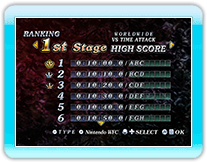

14 |
VERSUS MODE |
 |
|
In questa modalità puoi affrontare giocatori lontani con la Nintendo Wi-Fi Connection. Selezionando questa modalità verrai automaticamente connesso alla Nintendo Wi-Fi Connection.
● WORLD WIDE ● REGIONAL
● FRIEND
Una volta che hai selezionato il tipo gruppo in cui vuoi giocare, apri la sessione per i partecipanti.
Se nessuno partecipa alla sessione, la partita verrà cancellata e la connessione persa. Mentre aspetti che i giocatori vi partecipino, puoi tornare alla selezione delle modalità premendo
Una volta raggiunto un numero di giocatori sufficiente, viene deciso
(a maggioranza) le regole e lo stage dove la sfida avrà inizio. * Se una votazione si conclude alla pari, la regola di una sessione verrà decisa casualmente. * Non è possibile scegliere gli stage dei boss.
La partita inizia dopo che è stato scelto lo stage. Al termine della partita, i giocatori possono vedere la loro posizione in classifica.
Questa modalità è eseguita in Time Attack. Gioca finchè uno dei giocatori raggiunge un determinato numero di punti (10 milioni).
La schermata dei risultati elenca i tuoi 30 punteggi migliori. Se raggiungi il tuo punteggio migliore sfidando un altro giocatore con la Nintendo WFC, il tuo punteggio può venire registrato nella classifica Nintendo Wi-Fi Connection. Quando il tuo punteggio viene registrato, puoi vedere sia la tua posizione che quella degli altri 30 giocatori che si sono classificati vicino alla tua posizione.
|
 |
 |
 |